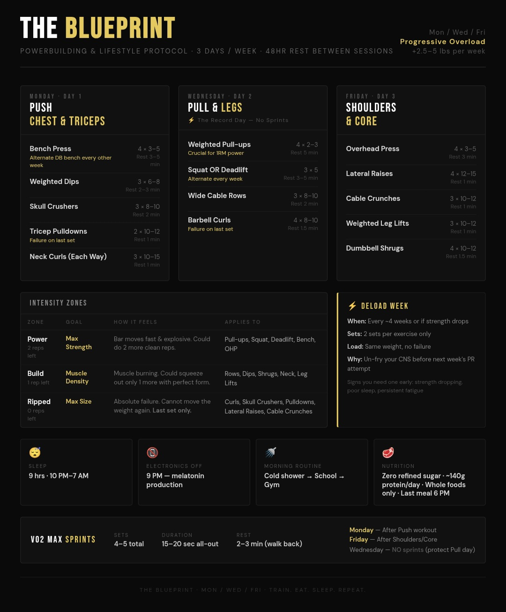

The full list of what gets pulled, every day, to stay healthy and keep compounding — food, sleep, and training — with the actual science behind each piece.
What goes in either builds the system or taxes it. The rule of thumb: if it doesn't look like something that grew or was raised, be suspicious of it.
WHY:Whole foods keep their fiber, micronutrients, and natural satiety signals intact — all of which get stripped out during industrial processing. Diets built around whole foods consistently show better metabolic markers and easier weight regulation than processed diets matched for the same calories.
WHY:Ultra-processed foods are engineered for a specific fat/sugar/salt ratio that overrides normal fullness cues, so people eat more calories than intended even when total calories are matched. Long-term studies link them to higher rates of metabolic syndrome and cardiovascular disease.
WHY:Refined sugar spikes blood glucose and insulin fast, and repeated spikes drive insulin resistance, fat storage, and energy crashes over time. Cutting it out stabilizes energy throughout the day and lowers the inflammatory load on tissue.
WHY:Seed oils (canola, soybean, corn, sunflower) are extracted using high heat and chemical solvents, then bleached and deodorized to mask the resulting smell — and they're unstable, oxidizing readily when reheated at home into aldehydes and other byproducts linked to oxidative stress. They're also overwhelmingly omega-6, and most people already get far more omega-6 than omega-3, a ratio tied to chronic low-grade inflammation. Worth flagging honestly: mainstream cardiology bodies still classify them as heart-neutral-to-beneficial, so this is a genuinely contested area in nutrition science — the case above is the strongest version of the concern, not a settled consensus. Preservatives like BHA, BHT, and TBHQ have separately been flagged in animal studies for endocrine and gut-microbiome disruption, even at the small amounts still legally permitted.
WHY:The FDA's legal definition of "natural flavor" allows manufacturers to use complex flavor-chemical extracts that are processed with solvents, carriers, and stabilizers in a lab — derived from a natural source, but transformed well past it — and the label doesn't require disclosing which compounds are actually inside it. "Artificial flavor" follows the same opaque rule with synthetic starting material instead. Neither label tells you what's actually in the product; both exist specifically so manufacturers don't have to. Avoiding both is a way of refusing food where the maker has deliberately hidden the ingredient list behind a vague legal term.
WHY:Higher protein intake drives muscle protein synthesis — the rate-limiting step for building and keeping muscle, especially while lifting regularly. Most research shows gains plateau somewhere in the 0.7–1g/lb range, so 1g/lb is a simple, safe target without needing to hit it exactly every day.
Training breaks the body down; sleep is where it actually rebuilds. Consistency matters more than any single trick on this list.
WHY:Digestion raises core body temperature and metabolic activity, working against the temperature drop the body needs to fall into deep sleep. Eating close to bedtime is also linked to worse overnight glucose control and more fragmented sleep.
WHY:Bright light shortly after waking is the strongest signal for anchoring the circadian clock, telling the brain "day has started" and setting a timer for melatonin release 14–16 hours later. It's one of the most evidence-backed habits for improving both sleep onset and next-day alertness.
WHY:Cortisol naturally peaks in the first hour after waking to drive alertness; pulling out a phone — notifications, comparison, news — can spike it further and throw that rhythm off. There's a second issue on top of that: scrolling and notifications trigger quick dopamine hits, and that dopamine-driven reward loop competes with and can blunt the steady, cortisol-driven alertness your body is trying to produce naturally — training the brain to chase short stimulation spikes instead of the gradual wake-up signal it's built for. Delaying screens gives the nervous system a calmer, more deliberate start to the day.
WHY:A warm shower raises skin temperature, which paradoxically speeds up the core temperature drop afterward as heat escapes through dilated blood vessels — mimicking the natural dip that precedes sleep. Studies show this can shave several minutes off the time it takes to fall asleep.
WHY:Cold exposure triggers a release of norepinephrine and dopamine, boosting alertness and mood without caffeine, and reinforces the same "day has started" signal as morning sunlight. Consistent use is also linked to metabolic and mitochondrial adaptations.
WHY:Sleeping and waking at the same time daily keeps the circadian rhythm stable, which improves sleep quality more than total hours alone — an inconsistent schedule is tied to worse metabolic and cardiovascular outcomes even with enough total sleep. The ~9 hour window also covers the full set of REM and deep sleep cycles needed for physical recovery and memory consolidation.
WHY:Screens emit blue-heavy light that suppresses melatonin production, delaying the body's natural signal to feel sleepy, and the mental stimulation of scrolling keeps the brain in an alert state. Cutting screens an hour out lets melatonin rise undisturbed and gives the nervous system time to downshift.
Strength, speed, and aerobic base, each trained on its own track so they reinforce each other instead of competing for recovery.

WHY:Progressive overload — gradually increasing weight or volume — is the core driver of muscle and strength gains, forcing the body to keep adapting instead of plateauing. Structuring lifts into intensity zones and scheduling deload weeks lets the program push hard most weeks while still giving the nervous system and connective tissue time to recover, which is what prevents stalled progress and overuse injury.
WHY:Short, all-out sprints are one of the most time-efficient ways to raise VO2 max, which is one of the strongest predictors of long-term cardiovascular health and longevity in large studies. They also recruit fast-twitch fibers that slower cardio doesn't train, building power and top-end speed.
WHY:Training at a conversational, sustainable pace builds mitochondrial density and improves the body's ability to clear lactate and burn fat for fuel, building an aerobic base that speeds up recovery between harder sessions like lifting and sprints. It's also one of the lowest-fatigue ways to add cardio volume without cutting into strength gains.
WHY:Stretching after a day of heavy training helps maintain joint range of motion and works against the muscle stiffness that builds from repeated mechanical tension, lowering next-day soreness. Done right before bed, it also shifts the nervous system into a more parasympathetic, "rest" state — helping the transition into sleep.